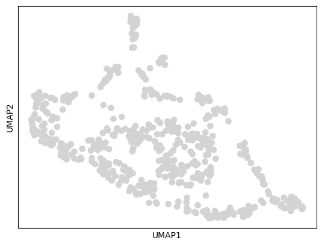

Prepare data for training Cell2net model#
In this tutorial, we will prepare K562 multiome data for training Cell2Net models. This involves creating metacells, adding peak sequences, finding TF binding sites within peaks, and linking peaks and TFs to genes through regulatory relationships.
import warnings
warnings.filterwarnings('ignore')
import os
import pandas as pd
import numpy as np
import mudata as md
import cell2net as cn
import scanpy as sc
md.set_options(pull_on_update=False)
<mudata._core.config.set_options at 0x7f4e244125d0>
Set Input and Output Paths#
We define the paths for input data and output directory. The input data comes from the processed K562 multiome dataset.
input_data = "../../../../results/37_K562_10x_multiome/05_create_mdata/mdata.h5mu"
out_dir = "./02_prepare_data"
os.makedirs(out_dir, exist_ok=True)
Load Multiome Dataset#
Load the preprocessed K562 multiome data containing both RNA-seq and ATAC-seq measurements from the same cells.
mdata = md.read_h5mu(input_data)
mdata
MuData object with n_obs × n_vars = 6508 × 151699
obs: 'total_counts_rna', 'total_counts_atac', 'total_counts_rna_log', 'total_counts_atac_log'
2 modalities
rna: 6508 x 15735
obs: 'orig.ident', 'nCount_RNA', 'nFeature_RNA', 'Sample', 'TSSEnrichment', 'ReadsInTSS', 'ReadsInPromoter', 'ReadsInBlacklist', 'PromoterRatio', 'PassQC', 'NucleosomeRatio', 'nMultiFrags', 'nMonoFrags', 'nFrags', 'nDiFrags', 'BlacklistRatio', 'DoubletScore', 'DoubletEnrichment', 'ReadsInPeaks', 'FRIP', 'nCount_ATAC', 'nFeature_ATAC', 'percent.mt', 'n_genes_by_counts', 'log1p_n_genes_by_counts', 'total_counts', 'log1p_total_counts', 'pct_counts_in_top_50_genes', 'pct_counts_in_top_100_genes', 'pct_counts_in_top_200_genes', 'pct_counts_in_top_500_genes'
var: 'genes', 'n_cells', 'n_cells_by_counts', 'mean_counts', 'log1p_mean_counts', 'pct_dropout_by_counts', 'total_counts', 'log1p_total_counts', 'highly_variable', 'highly_variable_rank', 'means', 'variances', 'variances_norm'
uns: 'hvg'
obsm: 'X_pca', 'X_umap'
layers: 'counts'
atac: 6508 x 135964
obs: 'orig.ident', 'nCount_RNA', 'nFeature_RNA', 'Sample', 'TSSEnrichment', 'ReadsInTSS', 'ReadsInPromoter', 'ReadsInBlacklist', 'PromoterRatio', 'PassQC', 'NucleosomeRatio', 'nMultiFrags', 'nMonoFrags', 'nFrags', 'nDiFrags', 'BlacklistRatio', 'DoubletScore', 'DoubletEnrichment', 'ReadsInPeaks', 'FRIP', 'nCount_ATAC', 'nFeature_ATAC', 'percent.mt', 'n_genes_by_counts', 'log1p_n_genes_by_counts', 'total_counts', 'log1p_total_counts', 'pct_counts_in_top_50_genes', 'pct_counts_in_top_100_genes', 'pct_counts_in_top_200_genes', 'pct_counts_in_top_500_genes'
var: 'peaks', 'n_cells_by_counts', 'mean_counts', 'log1p_mean_counts', 'pct_dropout_by_counts', 'total_counts', 'log1p_total_counts'
obsm: 'X_umap'
layers: 'counts'Create Metacells#
Now we’ll create metacells by aggregating similar single cells. This process:
Parameters:#
n_metacells=500: Target number of metacells to create
use_rep=”X_pca”: Use PCA space for finding similar cells
sampling=”random”: Random sampling strategy for scalability
n_neighbors=50: Number of similar cells to aggregate per metacell
Benefits:#
Noise reduction: Averaging reduces technical noise and dropout effects
Computational efficiency: 500 metacells vs. thousands of single cells
Signal preservation: Maintains biological heterogeneity while improving SNR
Scalable training: Enables efficient model training on representative data
mdata_bulk = cn.tl.get_metacells(mdata, n_metacells=500, use_rep="X_pca",
sampling="random", n_neighbors=50)
Let’s examine the structure of our metacell dataset. Notice how the number of observations has been reduced from thousands of single cells to 500 representative metacells.
mdata_bulk
MuData object with n_obs × n_vars = 500 × 151699
obs: 'total_counts_rna', 'total_counts_atac', 'total_counts_rna_log', 'total_counts_atac_log'
2 modalities
rna: 500 x 15735
obs: 'orig.ident', 'nCount_RNA', 'nFeature_RNA', 'Sample', 'TSSEnrichment', 'ReadsInTSS', 'ReadsInPromoter', 'ReadsInBlacklist', 'PromoterRatio', 'PassQC', 'NucleosomeRatio', 'nMultiFrags', 'nMonoFrags', 'nFrags', 'nDiFrags', 'BlacklistRatio', 'DoubletScore', 'DoubletEnrichment', 'ReadsInPeaks', 'FRIP', 'nCount_ATAC', 'nFeature_ATAC', 'percent.mt', 'n_genes_by_counts', 'log1p_n_genes_by_counts', 'total_counts', 'log1p_total_counts', 'pct_counts_in_top_50_genes', 'pct_counts_in_top_100_genes', 'pct_counts_in_top_200_genes', 'pct_counts_in_top_500_genes'
var: 'genes', 'n_cells', 'n_cells_by_counts', 'mean_counts', 'log1p_mean_counts', 'pct_dropout_by_counts', 'total_counts', 'log1p_total_counts', 'highly_variable', 'highly_variable_rank', 'means', 'variances', 'variances_norm'
layers: 'counts'
atac: 500 x 135964
obs: 'orig.ident', 'nCount_RNA', 'nFeature_RNA', 'Sample', 'TSSEnrichment', 'ReadsInTSS', 'ReadsInPromoter', 'ReadsInBlacklist', 'PromoterRatio', 'PassQC', 'NucleosomeRatio', 'nMultiFrags', 'nMonoFrags', 'nFrags', 'nDiFrags', 'BlacklistRatio', 'DoubletScore', 'DoubletEnrichment', 'ReadsInPeaks', 'FRIP', 'nCount_ATAC', 'nFeature_ATAC', 'percent.mt', 'n_genes_by_counts', 'log1p_n_genes_by_counts', 'total_counts', 'log1p_total_counts', 'pct_counts_in_top_50_genes', 'pct_counts_in_top_100_genes', 'pct_counts_in_top_200_genes', 'pct_counts_in_top_500_genes'
var: 'peaks', 'n_cells_by_counts', 'mean_counts', 'log1p_mean_counts', 'pct_dropout_by_counts', 'total_counts', 'log1p_total_counts'
layers: 'counts'Update Metacell Metadata#
We need to properly organize the metadata for our metacells by:
Separating modality-specific counts - RNA and ATAC total counts
Adding log-transformed counts - For use as covariates in modeling
Combining into unified metadata - Single observation table for both modalities
This metadata will be used later as covariates to account for technical variation in Cell2Net models.
# update total counts for meta cells
df_obs_rna = mdata_bulk['rna'].obs[['total_counts']]
df_obs_rna = df_obs_rna.rename(columns={'total_counts': 'total_counts_rna'})
df_obs_atac = mdata_bulk['atac'].obs[['total_counts']]
df_obs_atac = df_obs_atac.rename(columns={'total_counts': 'total_counts_atac'})
df_obs = pd.concat([df_obs_rna, df_obs_atac], axis=1)
mdata_bulk.obs = df_obs.copy()
mdata_bulk.obs['total_counts_rna_log'] = np.log10(mdata_bulk.obs['total_counts_rna'])
mdata_bulk.obs['total_counts_atac_log'] = np.log10(mdata_bulk.obs['total_counts_atac'])
Compute Embeddings for Metacells#
Let’s compute UMAP embeddings to visualize the diversity captured in our metacells:
Normalize RNA counts - Standard total-count normalization
Principal Component Analysis - Dimensionality reduction to 15 components
Nearest neighbor graph - Build connectivity between similar metacells
UMAP embedding - 2D visualization of metacell relationships
This helps us verify that metacells preserve the biological diversity present in the original single-cell data.
# visualize metacells
sc.pp.normalize_total(mdata_bulk['rna'])
sc.tl.pca(mdata_bulk['rna'], n_comps=15, use_highly_variable=True)
sc.pp.neighbors(mdata_bulk['rna'])
sc.tl.umap(mdata_bulk['rna'])
sc.pl.umap(mdata_bulk['rna'])

The UMAP plot shows the distribution of our 500 metacells in 2D space. Good metacell generation should preserve the major cell type groups and transitions present in the original data.
Add Genomic Annotations#
Now we’ll enrich our dataset with essential genomic information needed for Cell2Net modeling:
Key Annotations:#
Gene TSS coordinates - Transcription start sites of genes for regulatory modeling
Peak sequences - 256bp DNA sequences around ATAC peak summits
DNA sequences - Extracted from reference genome for sequence analysis
This genomic context is crucial for understanding regulatory relationships between chromatin accessibility and gene expression.
cn.pp.add_gene_tss_coord(mdata_bulk, gene_gtf='../../../../data/refdata-gex-GRCh38-2020-A/genes/genes.gtf.gz')
cn.pp.add_peaks(mdata_bulk, mod_name='atac', peak_len=256)
cn.pp.add_dna_sequence(mdata_bulk, ref_fasta='../../../../data/refdata-gex-GRCh38-2020-A/fasta/genome.fa')
Load Transcription Factor Motifs#
We’ll load transcription factor (TF) binding motifs from the JASPAR2024 database. These position weight matrices (PWMs) represent the DNA binding preferences of different transcription factors.
motifs = cn.pp.get_tf_motifs(database='JASPAR2024')
Filter Motifs by Expressed Genes#
We filter the motif collection to only include transcription factors that are expressed in our K562 dataset. This reduces computational complexity and focuses on biologically relevant TFs.
Rationale: Only TFs that are expressed can potentially regulate target genes in this cell type.
cn.pp.filter_motifs_by_genes(motifs, mdata_bulk)
Scan for Motif Matches#
Now we scan all ATAC peak sequences for TF binding motif matches using a stringent p-value threshold (1e-04).
Process:
Sequence scanning - Search each 256bp peak sequence for motif matches
Statistical scoring - Calculate p-values for potential binding sites
Threshold filtering - Keep only high-confidence matches (p < 1e-04)
Position recording - Store exact locations of predicted binding sites
This creates a comprehensive map of where transcription factors likely bind within our accessible chromatin regions.
cn.pp.match_motif(mdata_bulk, motifs, p_value=1e-04)
Link Regulatory Elements#
Now we establish regulatory connections between chromatin accessibility and gene expression.
Peak-to-Gene Linking#
This critical step identifies which ATAC peaks potentially regulate which genes:
Parameters:
min_n_peaks=1: Minimum peaks required per gene for modeling
highly_variable=True: Focus on genes with variable expression
gene_name_col=”genes”: Use gene symbols for identification
Method: Uses genomic distance, chromatin accessibility correlation, and other features to predict regulatory relationships between peaks and genes.
cn.pp.peak_to_gene(mdata_bulk,
ref_fasta='../../../../data/refdata-gex-GRCh38-2020-A/fasta/genome.fa',
min_n_peaks=1,
highly_variable=True,
gene_name_col="genes",
inplace=True)
TF-to-Gene Relationships#
Finally, we establish connections between transcription factors and their potential target genes by combining:
Motif matches in peaks - Where TFs can bind
Peak-to-gene links - Which peaks regulate which genes
TF expression - Which TFs are active in these cells
This creates a comprehensive regulatory network showing how TFs → peaks → genes, which is the foundation for Cell2Net modeling.
cn.pp.tf_to_gene(mdata_bulk)
Save Processed Dataset#
We save the fully processed dataset containing:
500 metacells with aggregated RNA/ATAC measurements
Genomic annotations - Gene coordinates, peak sequences, motif matches
Regulatory networks - Peak-to-gene and TF-to-gene relationships
Metadata - Total counts and other covariates for modeling
This processed dataset is now ready for Cell2Net model training!
mdata_bulk.write_h5mu(f'{out_dir}/mdata.h5mu')
Export Motif Matches#
Additionally, we export the motif match results as a BED file for external analysis or visualization in genome browsers.
BED format contains:
Chromosome, start, end - Genomic coordinates of binding sites
Motif ID - Which transcription factor motif matched
Score - Binding affinity prediction
Strand - DNA strand orientation
This can be loaded into IGV, UCSC Genome Browser, or other tools for visual inspection of predicted TF binding sites.
# save motif match results to a bed file
motif_bed = mdata_bulk['atac'].uns['motif_match']
motif_bed.to_csv(f'{out_dir}/motif_match.bed', sep='\t', index=False, header=False)
Summary#
Excellent! You’ve successfully prepared a comprehensive dataset.
Next Steps#
With this prepared dataset, you can now train Cell2net models!